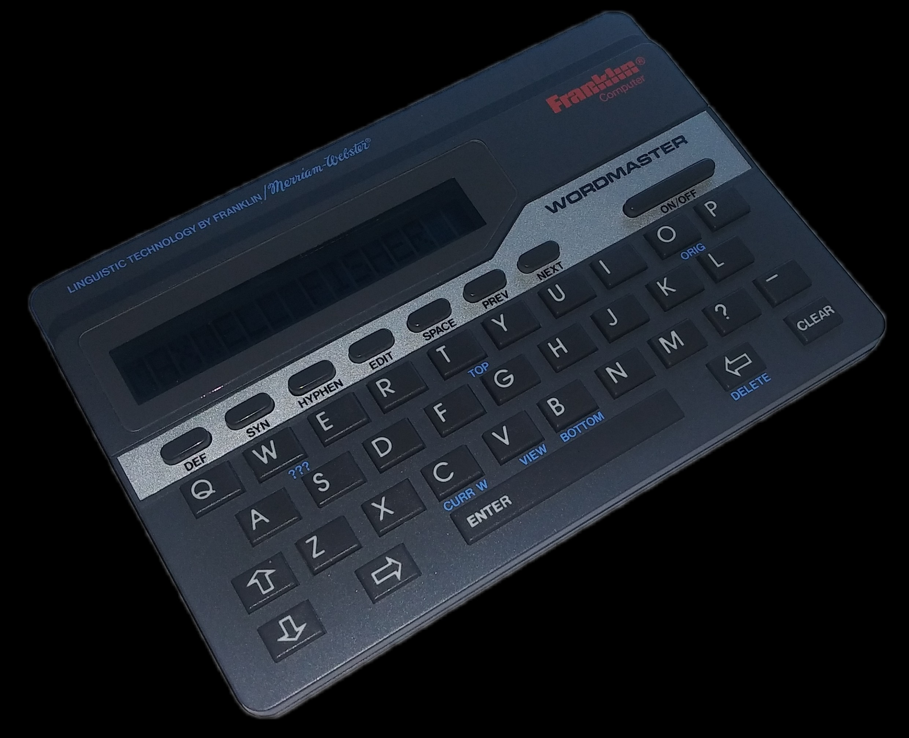

---
---
{% include itemHeader.html title="Franklin Computer Wordmaster Deluxe" date="2020/06/29" %}

The Franklin Computer Wordmaster Deluxe (WM-1055) is a small, portable, electronic dictionary. It has many functions, such as a thesaurus, a spelling checker, and more. This exact one seems to have been made in 1989 because of the copywrite info on the back and in the user manual, though I am not completely sure when it was made. The display is a 16 digit dot matrix LCD screen with adjustable contrast. The device has spelling correction for over 80,000 words, while the thesaurus has over 78,000 word definitions. The device also has a few games, which include Hangman, Anagrams, Deduction, and Jumble. Some extra features are virtual dice, a random number generator, a random word generator, a lottery number generator, and a word list generator.
{% include itemFooter.html %}